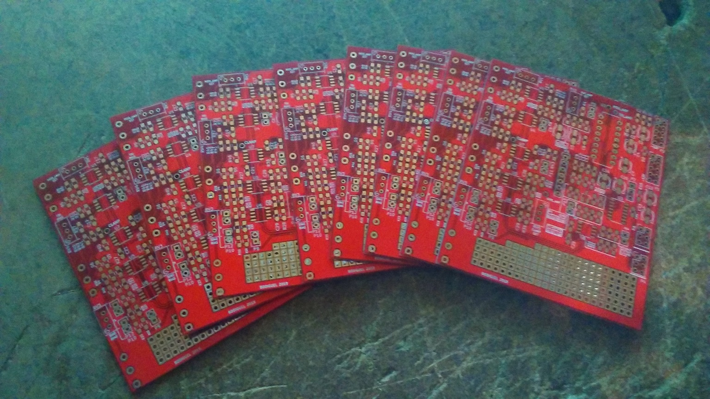

OCTOBER 2018, the VGA Synth is ready to rock !!


the project is finished. At least no more circuitry, just some ribbon connector to make and connect the two last VCOs. Lazyness, lazyness. I'm quite glad about the results. the Sync signal is a bit dodgy but seems appropriate for modern display. It turns out 5 Vcos is maybe overkill, 3 is sufficient to have something useable. This could give more room for other cicuitry as an input video the next project will be to build a Video input circuit that will modulate the RGB signal of an existing video and be able to modulate and mix the VCOs with proper Video. There are some quite handy cheap NTSC/PAL to VGA converters that work very well.
IDEA BEHIND THE SYNTH
Dec. 2017
THE IDEA
I've been interested in video creation and modification for a long time, right after I've
read about the Sandin project, the synkie project and LZX industries modules.
All use the composite analog video protocol (PAL/NTSC). It's a complicated signal that
combined the synchronisation signals needed for the monitor and the color informations
into one signal !
This signal contains digital (sync signals) and analog parts(colors).
It requires large bandwith that most op-amps can't handle, at least 3Mhz.
Being an old analog protocol, it tends to disappear. Analog tv is a thing of the past now and monitor
with composite input will certainly vanish as well. I don't even need to mention the death
of cathode ray monitor.
Two reasons for the choice of VGA, the obsolescence of the PAL and the simpler protocol of the VGA.
The VGA protocol is simpler as well, the monitor receives all the signal on different wires.
I want to keep the all project simple and as cheap as possible (the most difficult part I guess).
I decided to take the LZX Industries standard for signals (1Vpp DC)
PROGRESS REPORT
Dec. 2017
VIDEO DRIVER
To output the video to the VGA the need for a proper driver circuit is obvious. Several factors have to be considered:output current, slew rate and bandwitdh. The drivers for the colors sees a 150 ohm load (75R serie, and 75R load and the vga monitor). Most op-amp will be squeezed to death with such heavy load. They're not designed for current anyway. There's a need for a high output current op-amp, but not only. The bandwith also needs to be sufficient to let trough at least 1Mhz signal into 150ohm and fast enough to handle 1Vpp DC. The gain of this stage should be of two to compensate the voltage divider formed by the two 75R resistor Fortunately there're some "video op amp" designed for this very purpose with now MASSIVE bandwith, some goes to the GHZ range. I used the LM6181 that appear to be in its end of life but it'll do for the first pass The three colors need to be blanked during the sync period with a specific timing. Although my tests used the H_sync as a blanking signal and get proper results. Maybe the monitor generates its own blanking period with the received H_sync and V_sync. Considering the limited space I'll have in the case (an old metal tool box), a switch is here to transform the color video into a monochrome video (the 3 colors are driven by the same signal). it will free up VCAs for other manipulations. Another cool thing to add is to invert signal creating more variety.
OSCILLATOR
The oscillator needs to be able to go up to 1Mhz (if not more). However, the scanline frequency of the VGA signal is twice the one from PAL. Meaning that once the VCO is locked to the H sync, less vertical bars will be present at maximun frequency. Maybe the VCO would need to go higher to compensate that, or use a lower scanline frequency. The oscillator is based on the xr2206 which is obsolete but still cheaply available from China. The IC gives an easy to use circuit with an handy amplitude modulation input (for vca aplication). However, At high frequencies, near 1Mhz, the waveforms become less good. At this point, The square wave is useless on its own. To synchronise the VCO to either the vertical sync or horizontal sync, a reset circuit needed to be added. Considering the 1VPP DC output, a lot of offsetting has to be added at various location. the xr2206 gives only two waveforms at the same time, triangle or sine and square. Hence the need for an external sine waveshaping Each output will be available in two, invert and non-inverted signal to give more options.
MARCH 2018
VCO PCB
PCB ordered and received. I ordered five and I received nine which is always nice as I've also plans to build a small PAL video modifier.  The struggle is now to wait for the components to arrive. I buy them from China via ebay or Aliexpress. It is a cheaper solution but it is also a gamble as counterfeits parts are real. However so far I've never had issues with ordering parts from China.
{kind=link}
JUIN 2018
NEW VCO
The XR2206 VCO wasn't very good at high frequencies (lost of amplitude mainly). I decided to go to LZX industries Cadet VCO. Being an approved vco for video rate oscillations It'll be quite good for VGA purposes. I tested both on a TV dispay with great results.
 more info about the LZX vco
more info about the LZX vco

OUTPUT CIRCUIT AND ENVELOPE FOLLOWER
This ciruict houses the enveloppe follower and the output stage that offset the signals into the proper range 0-0.7V.


OCTOBER 2018
POWER SUPPLY
Licorn Rainbow Poop Video generator
The synth sent out its first images. It is what I expected, the results are really satisfying.


 still a bit of work to do on the outpout inverter switches. It seems that I can't keep the bias set on the op-amp.
Modern displays have no issues synchronising to the sync signal of the synth, whereas older ones can take time to
display a good image. This is probably the fact of a non-exact timing signals that it is componsated by modern displays.
still a bit of work to do on the outpout inverter switches. It seems that I can't keep the bias set on the op-amp.
Modern displays have no issues synchronising to the sync signal of the synth, whereas older ones can take time to
display a good image. This is probably the fact of a non-exact timing signals that it is componsated by modern displays.